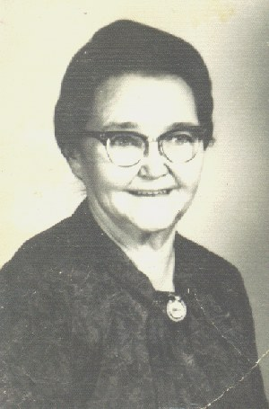
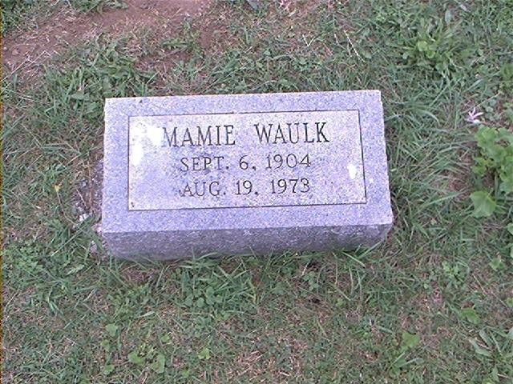
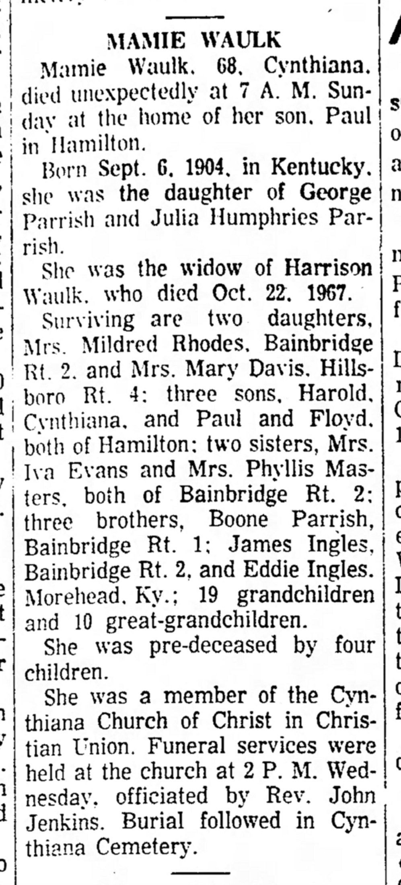

Mamie Sedalia (Parrish) Waulk
6 September 1904 – 19 August 1973
Quick Facts
Immediate Family
Parents
- George Parrish
- Julia Humphries Parrish (also memorial-listed as Julia Frances Humphries Ingles)
Children
- Mildred Louise Waulk Rhodes (1922–2002)
- Mary Francis Waulk Davis (1923–1994)
- Gabriel Harold “Harold” Waulk (1925–2002)
- David Paul “Paul” Waulk (1927–2009)
- Floyd Russell Waulk (1928–2010)
- Michael E. Waulk (1945–1945)
Siblings
- Iva Parrish Evans; Phyllis Ingles Masters; Boone L. Parrish; James M. Ingles; and Edward “Eddie” Ingles are named as siblings in Mamie’s obituary. Their separate identities are not further researched in this pass.
On Family Tree Sites
Couple Folder
Life Timeline
1904 · Born in Kentucky on 6 September; obituary names George Parrish and Julia Humphries Parrish as parents.
1921 · Married Benjamin Harrison Waulk, according to his obituary clipping and Find a Grave family panel.
1922–1945 · Six named Waulk children appear in memorial records; obituary says four children predeceased her.
19 Aug 1973 · Died at son Paul’s Hamilton home and was buried at Cynthiana Cemetery, per obituary/memorial.
Life Story
Mamie Sedalia Parrish was born in Kentucky on 6 September 1904. Her obituary names George Parrish and Julia Humphries Parrish as her parents and identifies her as the widow of Harrison Waulk. Benjamin’s obituary clipping says they married in 1921.
Mamie’s memorial and obituary report her death on 19 August 1973 at her son Paul’s home in Hamilton, Ohio, and burial in Cynthiana Cemetery. The obituary text calls her 69, while the memorial’s date-based age is 68; the dates 6 September 1904 and 19 August 1973 make her 68 at death. Preserve that wording discrepancy.
The obituary names six surviving children and says four children had died before her. Other records identify at least one of the deceased children as infant Michael E. Waulk (1945); the other three are not identified here.
Photographs & Family Gallery



Sources & Records
- Mamie Sedalia Parrish Waulk, Find a Grave memorial 14629127 — Reports birth/death/burial and reproduces an obituary naming her parents, husband, children, siblings and church.
- Mamie Waulk obituary clipping preserved on Find a Grave memorial 14629127 — The clipping identifies her parents as George Parrish and Julia Humphries Parrish; lists her husband and surviving children, siblings, four predeceased children, church and burial. The newspaper/date heading is not visible in the saved clipping.
- Benjamin Harrison Waulk, Find a Grave memorial 14627457 — Family panel links Mamie as spouse (1921); Benjamin’s obituary clipping confirms marriage to Mamie Parrish.
- David Paul “Paul” Waulk, Find a Grave memorial 35374642 — Paul’s obituary identifies Mamie (Parrish) Waulk and Benjamin as his parents.
- Mary Francis Waulk Davis, Find a Grave memorial 18648963 — Family panel lists Benjamin and Mamie as parents and David Paul as a sibling.
Person Archive
Browse the profile’s preserved material in the An American Bloodline Generation VII archive.
- Photographs and images
- Family photographs
- Headstone photographs
- Documents and records
- Research notes
- Sources and source copies
- Family books
Research Notes and Open Questions
- Mamie’s 1973 obituary text calls her 69, but the memorial gives 6 September 1904–19 August 1973, making her 68 on that date. Keep the discrepancy explicit; dates are not changed to fit the age statement.
- The obituary names George Parrish and Julia Humphries Parrish as her parents. The memorial parent panel lists Julia Frances Humphries Ingles but not George. Preserve the obituary’s exact wording and note the memorial name variation; no record connecting Julia’s later Ingles surname to the “Julia Humphries Parrish” form was reviewed.
- The obituary identifies five siblings by married/name forms as transcribed above, and four predeceased children. It does not name those four in the text. Do not assume that the infant Michael E. Waulk is the only one or identify the other three without records.
- The archived portrait is an identified Find a Grave memorial photo uploaded by Roger Waulk; the marker and clipping are separate images and captioned separately.
DNA
No DNA results or tests were located in the sources reviewed for this profile.